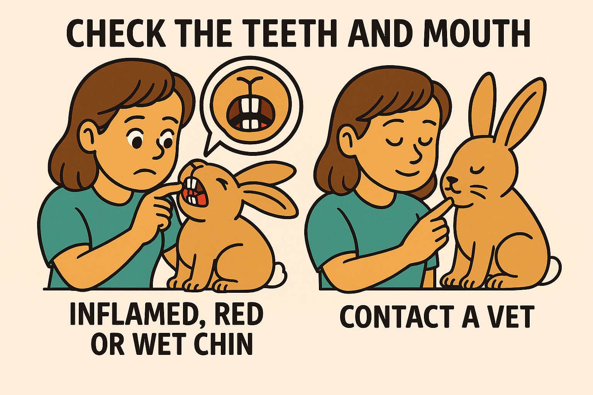

How to Care for your rabbit

A domestic rabbit should primarily eat hay, which should make up about 80% of their diet. Fresh vegetables, including leafy greens, should account for about 10% of their diet. It's important to offer a variety of vegetables, such as spinach, kale, and celery, but carrots should be given sparingly as they are high in sugar and can be harmful in excess.

A domestic rabbit needs to have a water bowl with water at room temperature to stay hydrated. Having a rodent water bottle not ownly deprives them of sufficent water but also can cause damages to their neck.

Trimming nails wrong can lead to cracked nails and bleeding. If you have troubles seeing the blood vessels in the nail try to use a bright flashlight.
How rabbits communicate
and more word that go to paragraph go
here are some facts to keep your rabbit safe
How identify troubles in your rabbit
EARS
Use a penlight to look in your rabbit's eat
Signs of a problem
- wax and dirt buildup
- Dark crusty material, (earmites)
If the ears need a general cleaning, use warm water or saline solution to gently wipe
EYES
rabbits eye should be clear and bright
Signs of a problem
- red or inflamed eyelid
- Discharge
- third eyelid showing
If the eye have a problems .......
NOSE
Signs of a problem
- discharge
- wet nose
- Crusty paws for nose wiping
If the nose has a problems .......
TEETH AND MOUTH
Check for any bumps or abscesses around the mouth area. The top and bottom incisors should line up and not overlap. If your rabbit has long overgrown teeth see a vet immediately
Signs of a problem
- Grinding or excessive chewing
- decreased in eating
- inflamed, red, or wet chin
If the mouth has a problems .......
SKIN AND FUR
Check for any scabs, lumps, bumps, furloss. Brush regularly with a fleacomb. White Crusty area means mites.
FEET AND NAILS
Sore hocks can occur to rabbits. Look for any open sores or red paw bottoms in the hocks area.
Nails should be reimed regularly Make sure to avoid pink quick and use cornflour to stop any fleeding from nails
SCENT GLANDS
Scent glands are located on either side of the genitals.
They emit a musky scent and can become clogged with a dark waxy build up. which can be normal, but may lead to infection.
Wipe away buildup with a q-tip and luke warm water
here are some facts to keep your rabbit safe
list of Rabbit vets
and more word that go to paragraph go
here are some facts to keep your rabbit safe
bottom